FIXED!! Problem resolved after I showed Maciek the calculation coming back from Center of Mass plugin for single pixel hex cell and he figured out the scaling factor (sqrt(2/sqrt(3))=1.075) that needed to be applied for (x,y,z) of glyphs/FPP links:
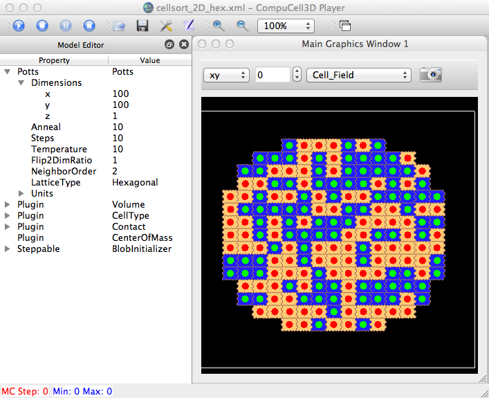
Returning to Julio's HexWing sim (I had to remove all plots or got segfault for some reason)...
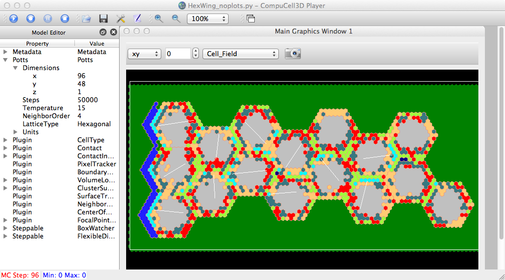No cell glyphs displayed, just normal cell display.
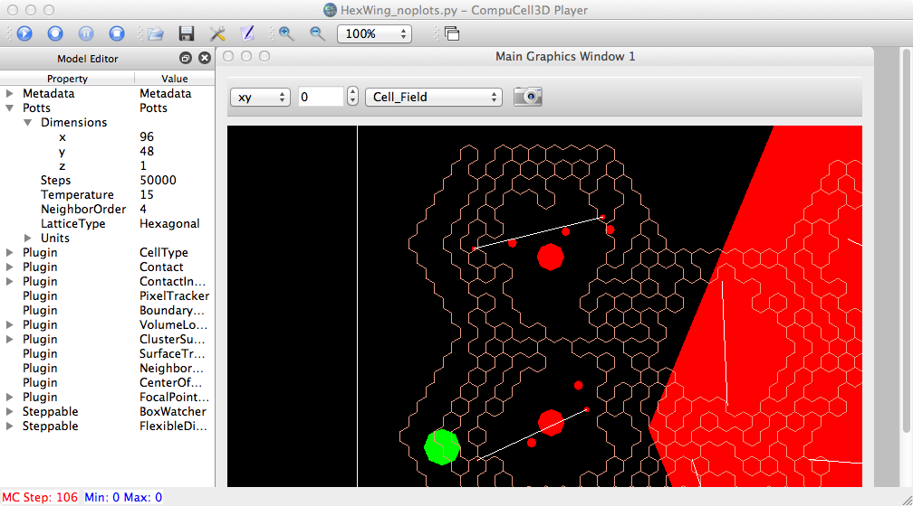Displaying (scaled) glyphs. We need to provide an optional 'scale by cell volume' checkbox (like following image).
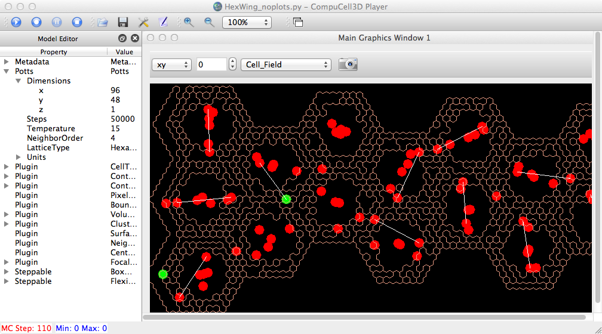
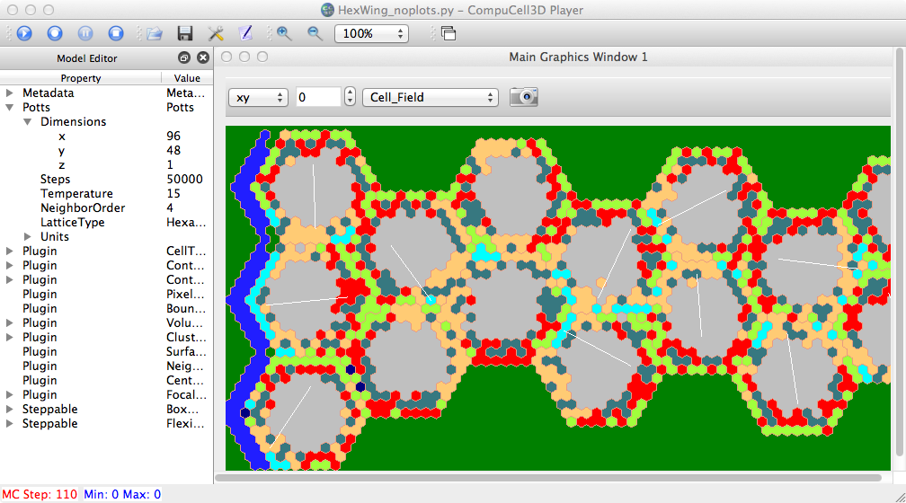
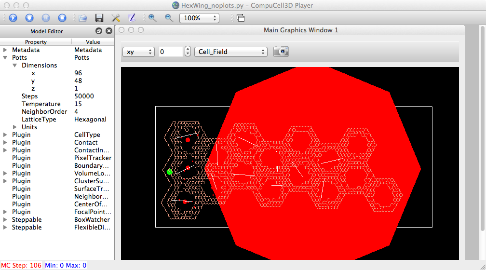
PRE-FIX brain-dumping...
Without doing any offsetting or hex-conversions in the cell glyph drawing method (MVCDrawModel2D.py/initCellGlyphsActor2D), we get the following results for an initial single-pixel cell on non-hex and hex lattices, after the initial MCS:
both sims use: ~/dev/Glazier$ ty pix1_xmax.piff 1 Condensing 18 19 0 1 0 0
----- MVCDrawModel2D.py: initCellGlyphsActor2D: type,volume, x,y= 1 4 18.5 0.5 ----- MVCDrawModel2D.py: xCM,yCM= 74.0 2.0
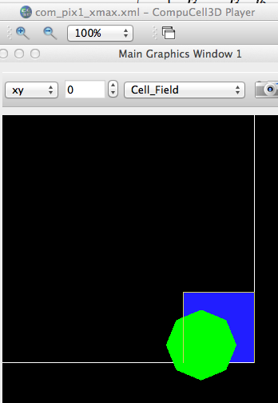
------------ FieldExtractor.cpp::fillCellFieldData2DHex ----------- type=1, pt= 18,0, hexCoords= 18.5,0 type=1, pt= 19,0, hexCoords= 19.5,0 type=1, pt= 18,1, hexCoords= 18,0.866025 type=1, pt= 19,1, hexCoords= 19,0.866025 ----- MVCDrawModel2D.py: initBordersActors2DHex(): # (hex) pts = 28 ----- MVCDrawModel2D.py: initCellGlyphsActor2D: type,volume, x,y= 1 4 20.1481862217 0.465302429551 ----- MVCDrawModel2D.py: xCM,yCM= 80.5927448868 1.8612097182
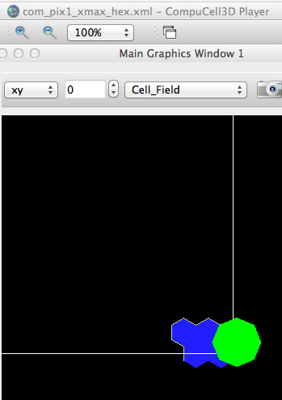
See below for the lead-in to this issue. After recent poking around, we
see the following strangeness - basically, when we have a hex lattice,
the coordinates for the the hex cells/borders are not aligned with the
center of mass coordinates for cells. And the mismatch is more
pronounced the further we are from (0,0), it seems:
~/dev/Glazier$ ty FocalPointInit2.piff 1 Condensing 5 10 5 10 0 0 2 Condensing 5 10 10 15 0 0 3 Condensing 10 15 5 10 0 0 4 NonCondensing 10 15 10 15 0 0 ~/dev/Glazier$ ty FocalPointInit3.piff 1 Condensing 85 90 85 90 0 0 2 Condensing 85 90 90 95 0 0 3 Condensing 90 95 85 90 0 0 4 NonCondensing 90 95 90 95 0 0
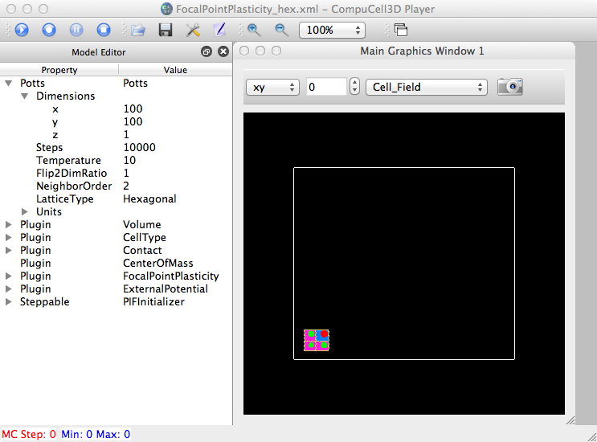
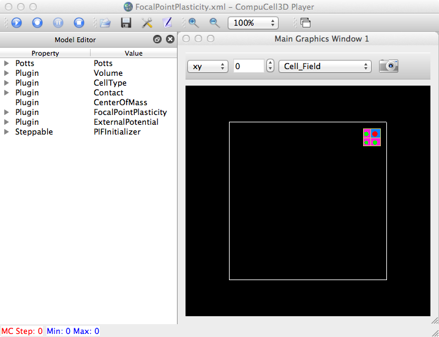
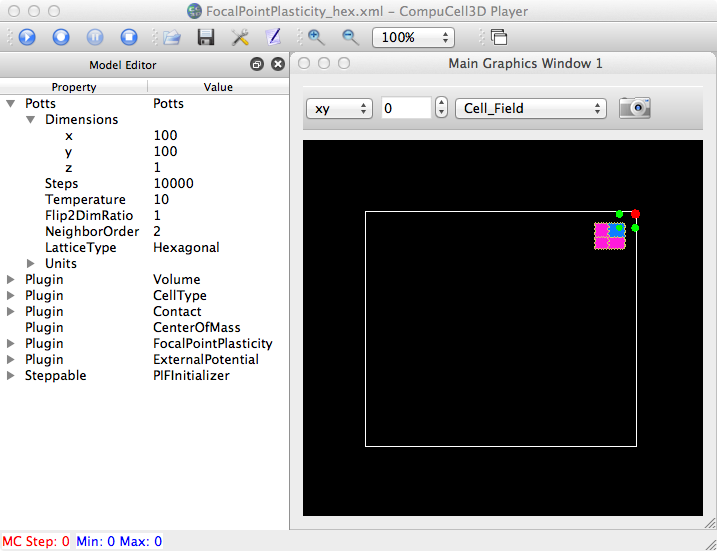
Julio made us aware of a problem drawing FocalPointPlasticity (FPP) links for cells on a hex lattice. To test, I simply edited the existing Demos sim for FPP and made it a hex lattice:
/Demos/FocalPointPlasticity$ ty FocalPointPlasticity.xml
<CompuCell3D>
<Potts>
<Dimensions x="100" y="100" z="1"/>
<Steps>10000</Steps>
<Temperature>10</Temperature>
<Flip2DimRatio>1</Flip2DimRatio>
<NeighborOrder>2</NeighborOrder>
<LatticeType>Hexagonal</LatticeType>
</Potts>
<Plugin Name="Volume">
<TargetVolume>25</TargetVolume>
<LambdaVolume>2.0</LambdaVolume>
</Plugin>
<Plugin Name="CellType">
<CellType TypeName="Medium" TypeId="0"/>
<CellType TypeName="Condensing" TypeId="1"/>
<CellType TypeName="NonCondensing" TypeId="2"/>
</Plugin>
<Plugin Name="Contact">
<Energy Type1="Medium" Type2="Medium">0</Energy>
<Energy Type1="NonCondensing" Type2="NonCondensing">33</Energy>
<Energy Type1="Condensing" Type2="Condensing">33</Energy>
<Energy Type1="NonCondensing" Type2="Condensing">33</Energy>
<Energy Type1="NonCondensing" Type2="Medium">16</Energy>
<Energy Type1="Condensing" Type2="Medium">16</Energy>
</Plugin>
<Plugin Name="FocalPointPlasticity">
<Parameters Type1="Condensing" Type2="NonCondensing">
<Lambda>10.0</Lambda>
<ActivationEnergy>-50.0</ActivationEnergy>
<TargetDistance>7</TargetDistance>
<MaxDistance>20.0</MaxDistance>
<MaxNumberOfJunctions>2</MaxNumberOfJunctions>
</Parameters>
<Parameters Type1="Condensing" Type2="Condensing">
<Lambda>10.0</Lambda>
<ActivationEnergy>-50.0</ActivationEnergy>
<TargetDistance>7</TargetDistance>
<MaxDistance>20.0</MaxDistance>
<MaxNumberOfJunctions>2</MaxNumberOfJunctions>
</Parameters>
</Plugin>
<Plugin Name="ExternalPotential">
<ExternalPotentialParameters CellType="NonCondensing" x="-10" y="0" z="0"/>
</Plugin>
<!-- <Plugin Name="Connectivity">
<Penalty>10000000</Penalty>
</Plugin> -->
<Steppable Type="PIFInitializer">
<PIFName>Demos/FocalPointPlasticity/FocalPointInit.piff</PIFName>
</Steppable>
</CompuCell3D>
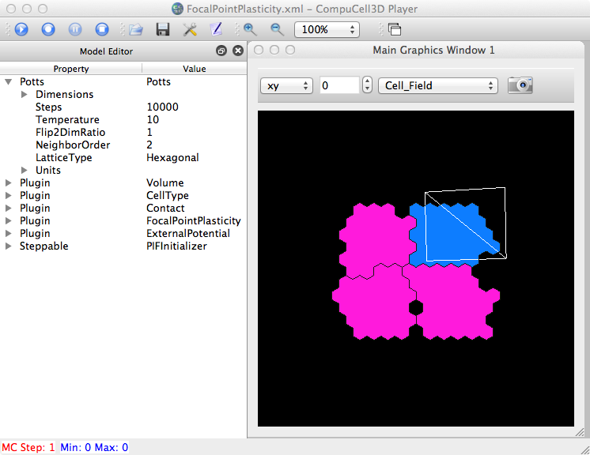
And this is the output from the function that draws the FPP links (player/Graphics/MVCDrawModel2D.py: initFPPLinksActor2D()
Step 1 Flips 10/10000 Energy -175.044 Cells 4 Inventory=4
cell.id= 1
cell.type= 1
cell.id= 1 x,y (begin)= 50.7634795571 44.0486299975
x,yield (end)= 50.6337351875 48.9498155888
x,yield (end)= 56.4322531938 44.2187405631
cell.id= 2
cell.type= 1
cell.id= 2 x,y (begin)= 50.6337351875 48.9498155888
x,yield (end)= 50.7634795571 44.0486299975
x,yield (end)= 56.4322531938 44.2187405631
x,yield (end)= 56.335323648 49.2875906858
cell.id= 3
cell.type= 1
cell.id= 3 x,y (begin)= 56.4322531938 44.2187405631
x,yield (end)= 50.7634795571 44.0486299975
x,yield (end)= 50.6337351875 48.9498155888
x,yield (end)= 56.335323648 49.2875906858
cell.id= 4
cell.type= 2
cell.id= 4 x,y (begin)= 56.335323648 49.2875906858
x,yield (end)= 50.6337351875 48.9498155888
x,yield (end)= 56.4322531938 44.2187405631
The drawing of the cells (pixels, not borders) on the hex lattice:
def initCellFieldHexActors(self, _actors):
# cellField = sim.getPotts().getCellFieldG()
# # # # print "INSIDE drawCellFieldHex"
# # # # print "drawing plane ",self.plane," planePos=",self.planePos
# fieldDim = cellField.getDim()
fieldDim = self.currentDrawingParameters.bsd.fieldDim
dimOrder = self.dimOrder(self.currentDrawingParameters.plane)
self.dim = self.planeMapper(dimOrder, (fieldDim.x, fieldDim.y, fieldDim.z))# [fieldDim.x, fieldDim.y, fieldDim.z]
self.cellType = vtk.vtkIntArray()
self.cellType.SetName("celltype")
self.cellTypeIntAddr=self.extractAddressIntFromVtkObject(self.cellType)
# a=21
self.hexCells=vtk.vtkCellArray()
self.hexCellsIntAddr=self.extractAddressIntFromVtkObject(self.hexCells)
self.hexCellsPolyData=vtk.vtkPolyData()
# **********************************************
self.hexPoints = vtk.vtkPoints()
# self.hexPoints.SetName("hexpoints")
self.hexPointsIntAddr=self.extractAddressIntFromVtkObject(self.hexPoints)
self.parentWidget.fieldExtractor.fillCellFieldData2DHex(self.cellTypeIntAddr,self.hexCellsIntAddr,self.hexPointsIntAddr,self.currentDrawingParameters.plane, self.currentDrawingParameters.planePos)
# self.parentWidget.fieldExtractor.fillCellFieldData2DHex(self.cellTypeIntAddr,self.hexPointsIntAddr,self.plane, self.planePos)
self.hexCellsPolyData.GetCellData().SetScalars(self.cellType)
self.hexCellsPolyData.SetPoints(self.hexPoints)
self.hexCellsPolyData.SetPolys(self.hexCells)
self.hexCellsMapper.SetInput(self.hexCellsPolyData)
self.hexCellsMapper.ScalarVisibilityOn()
self.hexCellsMapper.SetLookupTable(self.lut)
self.hexCellsMapper.SetScalarRange(0,self.lut.GetNumberOfColors())
_actors[0].SetMapper(self.hexCellsMapper)
Another thing to consider is how the cell borders for hex lattice are being drawn... rf. core/pyinterface/PlayerPythonNew/FieldExtractor.cpp
void FieldExtractor::fillCellFieldData2DHex(long _cellTypeArrayAddr,long _hexCellsArrayAddr ,long _pointsArrayAddr, std::string _plane , int _pos){
vtkIntArray *_cellTypeArray=(vtkIntArray *)_cellTypeArrayAddr;
vtkPoints *_pointsArray=(vtkPoints *)_pointsArrayAddr;
vtkCellArray * _hexCellsArray=(vtkCellArray*)_hexCellsArrayAddr;
Field3D<CellG*> * cellFieldG=potts->getCellFieldG();
Dim3D fieldDim=cellFieldG->getDim();
vector<int> fieldDimVec(3,0);
fieldDimVec[0]=fieldDim.x;
fieldDimVec[1]=fieldDim.y;
fieldDimVec[2]=fieldDim.z;
vector<int> pointOrderVec=pointOrder(_plane);
vector<int> dimOrderVec=dimOrder(_plane);
vector<int> dim(3,0);
dim[0]=fieldDimVec[dimOrderVec[0]];
dim[1]=fieldDimVec[dimOrderVec[1]];
dim[2]=fieldDimVec[dimOrderVec[2]];
int offset=0;
////For some reasons the points x=0 are eaten up (don't know why).
////So we just populate empty cellIds.
//for (int i = 0 ; i< dim[0]+1 ;++i){
// _cellTypeArray->SetValue(offset, 0);
// ++offset;
//}
Point3D pt;
vector<int> ptVec(3,0);
CellG* cell;
int type;
long pc=0;
//when accessing cell field it is OK to go outside cellfieldG limits. In this case null pointer is returned
for(int j =0 ; j<dim[1] ; ++j)
for(int i =0 ; i<dim[0] ; ++i){
ptVec[0]=i;
ptVec[1]=j;
ptVec[2]=_pos;
pt.x=ptVec[pointOrderVec[0]];
pt.y=ptVec[pointOrderVec[1]];
pt.z=ptVec[pointOrderVec[2]];
cell=cellFieldG->get(pt);
if (!cell){
type=0;
continue;
}else{
type=cell->type;
}
Coordinates3D<double> hexCoords=HexCoordXY(pt.x,pt.y,pt.z);
for (int idx=0 ; idx<6 ; ++idx){
Coordinates3D<double> hexagonVertex=hexagonVertices[idx]+hexCoords;
_pointsArray->InsertNextPoint(hexagonVertex.x,hexagonVertex.y,0.0);
}
pc+=6;
vtkIdType cellId = _hexCellsArray->InsertNextCell(6);
_hexCellsArray->InsertCellPoint(pc-6);
_hexCellsArray->InsertCellPoint(pc-5);
_hexCellsArray->InsertCellPoint(pc-4);
_hexCellsArray->InsertCellPoint(pc-3);
_hexCellsArray->InsertCellPoint(pc-2);
_hexCellsArray->InsertCellPoint(pc-1);
_cellTypeArray->InsertNextValue(type);
++offset;
}
}
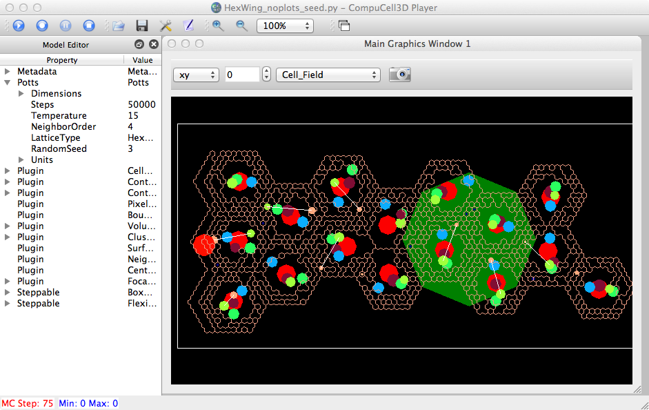
Argh! We can't reproduce results using RandomSeed? (is Julio using 'random' in his Python model?)
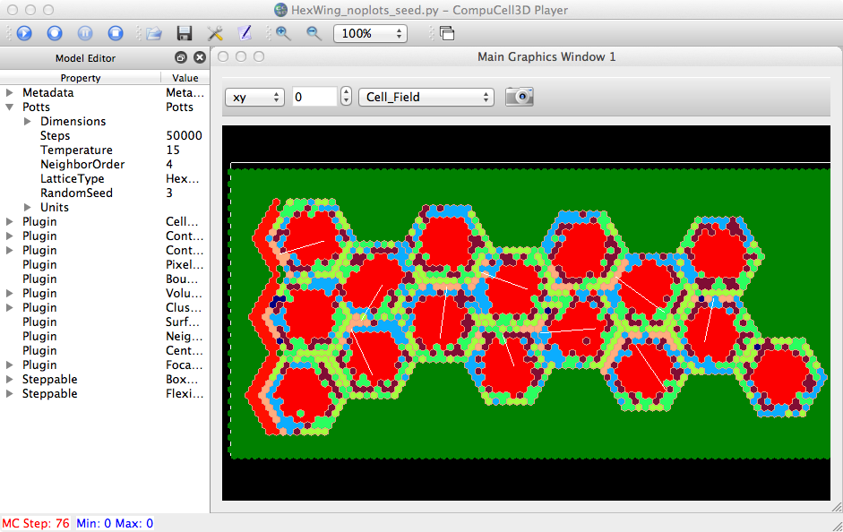
Displaying normal cells instead of glyphs (but at next MCS).